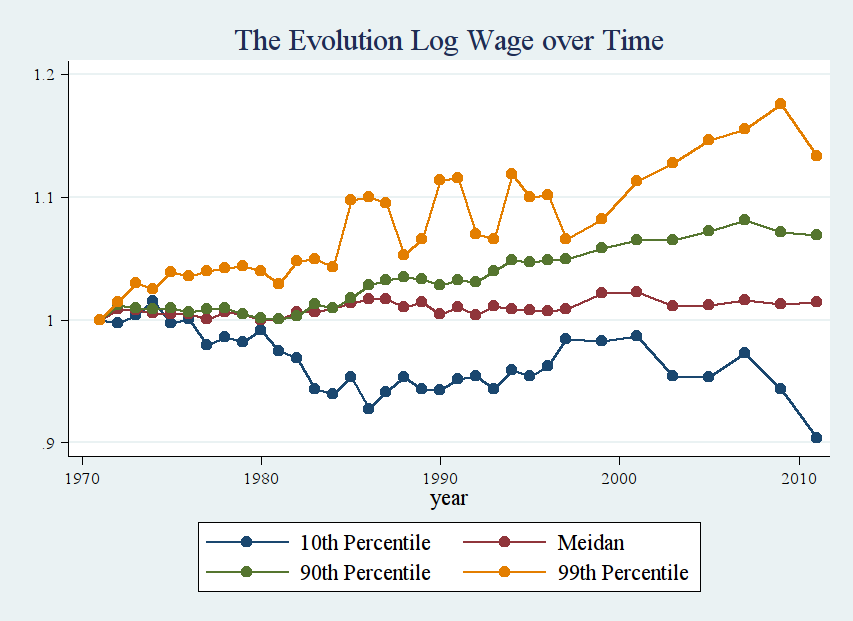
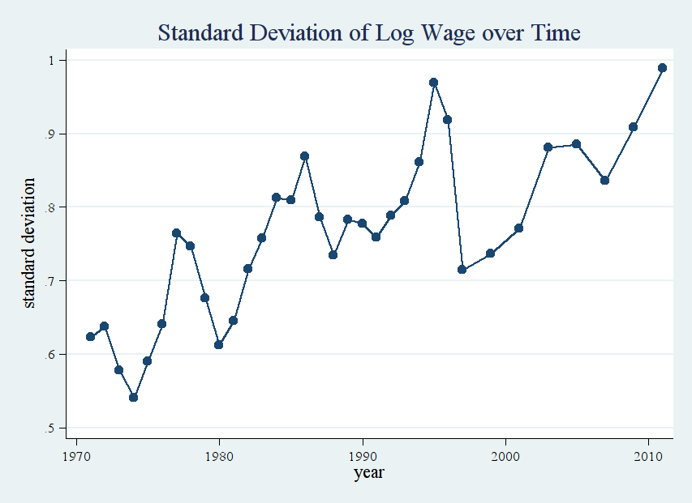
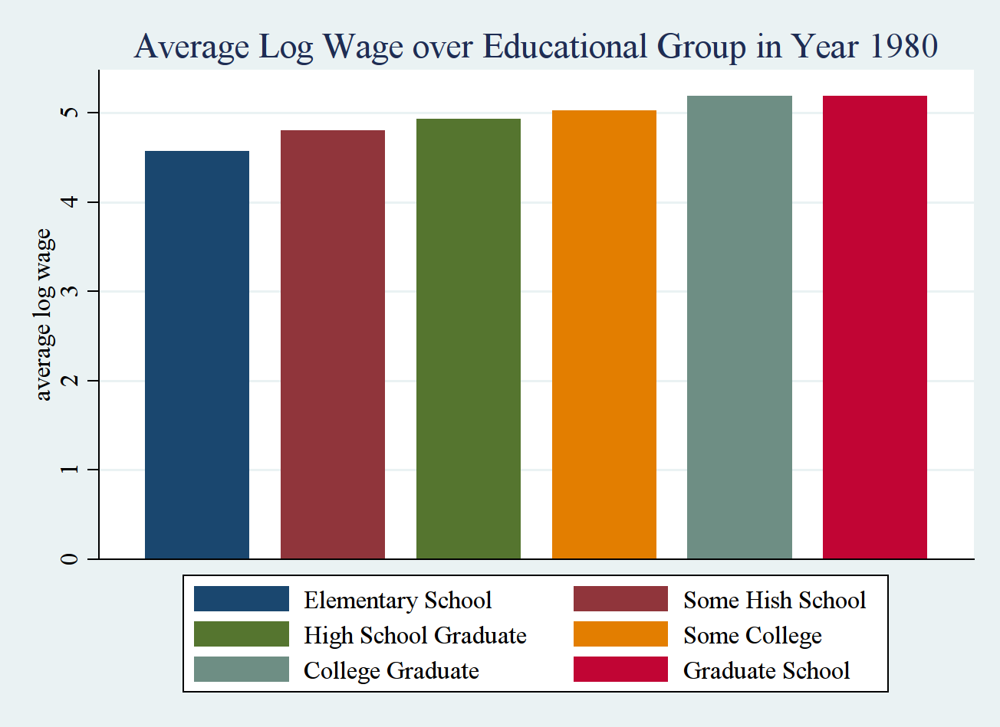
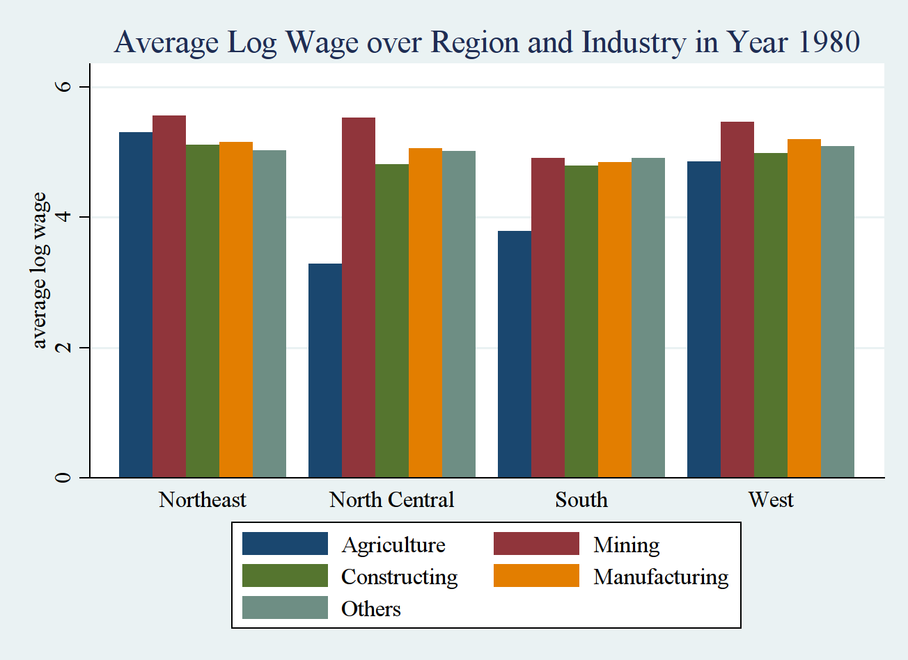

Optinal K300 Project: Regarding Panel Study of Income Dynamics (PSID)¶
Section 1: Questions¶
Data file:
- The data file k300_psid.dta can be downloanded here. This is the file you are going to use in your project. You need to refer to Section 2: Detailed Information about PSID Data for the detailed information regarding this data set.
- The original Panel Study of Income Dynamics (PSID) data gathers information about a very large sample of people, individuals are interviewed annually over thier life time. The PSID collects data on a wide array of social, demographic, health, economic, geospatial and psychological data. The data set we use here is just a small subset of it.
Format Requirement:
You need to submit TWO files to be able to receive full credits, one is a text file and the other is a do-file.
- Text File: In this file, you need to clearly label the question number, paste all the relevant figures and test output you obtained from STATA.
- Do-file: You need to provide me with your detailed do file. You need to make sure I can run it and get the figures and results containing in your text file. Significant amount of credits would be deducted if do-file is not working.
Questions:
Part I: Exploratory Data Analysis
You’re interested in finding out how the distribution of people’s wage income (log wage) evolves over time. Try to replicate the figures provided below. On the left, various percentiles of individuals’ log wage incomes are plotted against time. Note that different percentiles are normalized to be 1 at the beginning in the year 1971. For the figure on the right, standard deviation of people’s wage income is plotted against time.
Briefly describe the trend you’ve discovered in these plots.
 Pick one year (I chose the year 1980), and just use the data in that year to conduct your analysis. Within that year, identify the factors which may affect people’s income. Use mean plot to help you visualize the main effects and interaction effect.
For example, I identified educational attainment, region, industry can affect people’s income. So I plotted the main effect regarding factor “educational attainment” (the figure on the left), and the interaction effect of factor “region” and factor “industry” in the figure on the right.
Following my example, you need to first list all the factors that may affect people’s income, and then generate the mean plots regarding all the main effects and interaction effects. To get full credit, you need to list the factors and generate the relevant plots as much as possible.
 
Part II: Inferential Statistics
- (Continuation of Question 2), now use the ANOVA tests we’ve learned to conduct statistical tests to check significance of relevant main effects and interaction effects.
- (Appreciate the equivalence between ANOVA and linear regression) Conduct the same analysis as you did in question 3 using linear regression technique. You need to make sure you get the same results as in question 3.
Part III: Challenging Question
- The figure on the right in question 1, we plotted standard deviation of log wage over time. It seems there is a significant increase in the standard deviation after 1980’s. Could you (i). provide your reasoning why this change is observed; (ii) provide rigorous statistical test to check whether the change in standard deviation is significant.
{kind=link}
{kind=link}
{kind=link}
{kind=link}
Section 2: Detailed Information about PSID Data¶
PSID data can be found in the website provided by University of Michigan. Detailed documents can be found in the provided webpage.
Section 2.1: Lists of Variables¶
Section 2.2: More on Variables¶
x11101ll¶
This is personal identification number, same number denotes the data is from the same person.
year¶
The year when the data was collected, it takes value from 1971 to 2011.
age¶
The age of individual, age at the time of the interview.
educ¶
The number of grades of school that the head accomplished. Note that the way this variable is coded is not consistent through the years:
Year 1968 ~ 1974 and 1985 ~ 1990
Value/Range Code Value/Range Text 0 cannot read or write 1 0-5 grades 2 6-8 grades 3 9-11 grades 4 12 grades, high school 5 12 grades plus non-academic training 6 college, no degree 7 college degree, no advanced degree mentioned 8 college, advanced or professional degree 9 NA Year 1975 ~ 1984 and 1991 ~ 2011
Value/Range Code Value/Range Text 0 none 1 one 2 two 3 three 4 four 5 five 6 six 7 seven 8 eight 9 nine 10 ten 11 eleven 12 twelve; GED 13 first year of college 14 second year of college, with or without Associate’s degree 15 third year of college 16 fourth year of college; college graduate 17 at least some postgraduate work 99 NA
indwgt¶
Individual weight. If you are not familiar with weight in the survey data, you can ignore this variable.
empstatus¶
The employment status of individual: working now, unemployed, retired or other. Note that the way this variable is coded is also not consistent throughout the years:
Year 1968 ~ 1975
Value/Range Code Value/Range Text 1 Working now, or only temporarily laid off 2 Looking for work, unemployed 3 Retired, permanently disabled 4 housewife 5 student 6 Other Year 1976 ~ 1996
Value/Range Code Value/Range Text 1 Working now 2 Only temporarily laid off, sick leave or maternity leave 3 Looking for work, unemployed 4 Retired 5 permanently disabled; temporarily disable (from 1996 on) 6 housewife 7 student 8 Other; “workfare”; in prison or jail 9 NA; refused (from 1996 on) Year 1997 ~ 2001
Value/Range Code Value/Range Text 1 Working now 2 Only temporarily laid off, sick leave or maternity leave 3 Looking for work, unemployed 4 Retired 5 permanently disabled; temporarily disable (from 1996 on) 6 Keeping house 7 student 8 Other; “workfare”; in prison or jail 98 DK 99 NA; refused Year 2003
Value/Range Code Value/Range Text 0 Wild code 1 Working now 2 Only temporarily laid off, sick leave or maternity leave 3 Looking for work, unemployed 4 Retired 5 permanently disabled; temporarily disable (from 1996 on) 6 Keeping house 7 student 8 Other; “workfare”; in prison or jail 22 Wild code 99 NA; refused
industry¶
The main occupation of the individual. The way how this variable is coded is as follows:
Year 1968 ~ 2001
Value/Range Code Value/Range Text 0 Inap.: not eligible for retroactive coding 17-28 Agriculture, Forestry, and Fisheries 47-57 Mining 67-77 Construction 107-398 Manufacturing 407-479 Transportation, Communications, and Other Public Utilities 507-698 Wholesale and Retail Trade 707-718 Finance, Insurance, and Real Estate 727-759 Business and Repair Services 769-798 Personal Services 807-809 Entertainment and Recreation Service 828-897 Professional and Related Services 907-937 Public Administration 999 NA Year 2003 ~ 2011
Value/Range Code Value/Range Text 0 Inap.: did not work for money or has not worked for money 17-29 Agriculture, Forestry, and Fisheries 37-49 Mining 57-69 Utilities 77 Construction 107-399 Manufacturing 407-459 Wholesale Trade 467-579 Retail Trade 607-639 Transportation and Warehousing 647-679 Information 687-699 Finance and Insurance 707-719 Real Estate and Rental and Leasing 727-749 Professional, Scientific, and Technical Services 757-779 Management, Administrative and Support, and Waste Management Services 786-789 Educational Services 797-847 Health Care and Social Assistance 848 Wild code 856-859 Arts, Entertainment, and Recreation 866-869 Accommodations and Food Services 877-929 Other Services (Except Public Administration) 937-987 Public Administration and Active Duty Military 999 NA
region¶
Region is where some individual lived at the time of interview. In the data provided to you, I’ve just kept 4 possible values where 1 means northeast, 2 means north central, 3 means south and 4 means west.
Year 1968 ~ 1969
Value/Range Code Value/Range Text 1 Northeast (Connecticut, Maine, Massachusetts, New Hampshire, New Jersey, New York, Pennsylvania, Rhode Island, Vermont) 2 North Central (Illinois, Indiana, Iowa, Kansas, Michigan, Minnesota, Missouri, Nebraska, North Dakota, Ohio, South Dakota, Wisconsin) 3 South (Alabama, Arkansas, Delaware, Florida, Georgia, Kentucky, Louisiana, Maryland, Mississippi, North Carolina, Oklahoma, South Carolina, Tennessee, Texas, Virginia, Washington DC, West Virginia) 4 West (Arizona, California, Colorado, Idaho, Montana, Nevada, New Mexico, Oregon, Utah, Washington, Wyoming) Year 1970 ~ 2011
Value/Range Code Value/Range Text 0 Wild code (from 1999 onward) 1 Northeast 2 North Central 3 South 4 West 5 Alaska, Hawaii 6 Foreign country 9 NA (from 1972 onward)
homeowner¶
Whether an individual owns his home or pay rent or other.
Year 1968 ~ 1993
Value/Range Code Value/Range Text 1 Owns home (or trailer, fully or jointly) 5 Rents (or shares rent) 8 Neither (owns nor rents) Year 1994 ~ 2011
Value/Range Code Value/Range Text 0 Inap. 1 Owns or is buying home, either fully or jointly; mobile home owners who rent lots are included here 5 Pays rent 8 Neither owns nor rents 9 DK; NA; refused (Wild code in year 2007)
familysize¶
Number of people (children plus adults) in this FAMILY UNIT.
CPIURS¶
CPI-URS is the annual average Consumper Price Index research series (CPI-U-RS) where the price level in Dec. 1977 is set to be 100.
real_wagehead¶
Amount of individual’s wage and salary income, which is normalized using CPI-U-RS. So the dollar value is in terms of Dec. 1977 dollar.
real_housevalue¶
The value of house if any in terms of Dec. 1977 dollar.
real_faminc¶
This variable represents the summation of the following variables: taxable income of Head and Wife; total transfer of Head and Wife; taxable prorated income of others; total prorated transfers of others. The value is in terms of Dec. 1977 dollar.
educgrp¶
This variable is generated from variable educ. It can take six values where 1 means elementary school, 2 means some high school, 3 means high school graduate, 4 means some college, 5 means college graduate, and 6 means graduate school.
birth¶
The year when some individual was born.
industry_grp¶
This variable is generated from variable industry. It takes five values: 1 denotes agriculture, 2 denotes mining, 3 denotes constructing, 4 denotes manufacturing, and 5 denotes others.
log_real_wagehead¶
This is just the log value of the variable real_wagehead.
age2¶
This is the age square of some individual.
age3¶
This is just age cube of some individual.